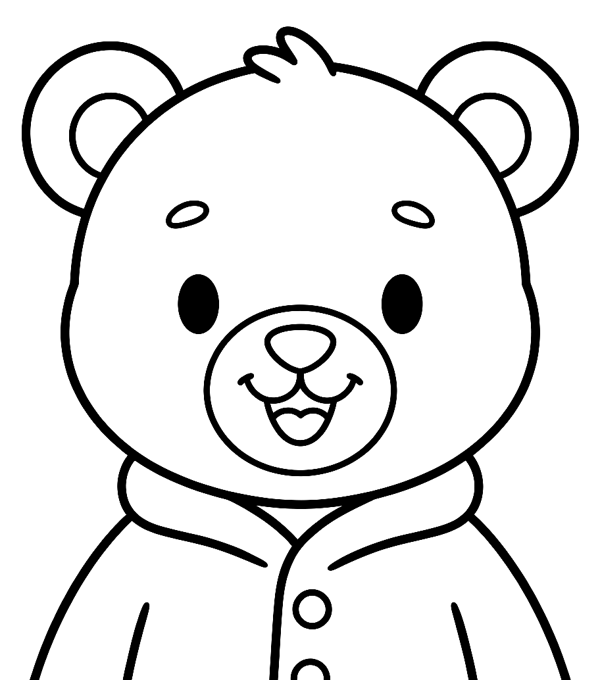

Le monde de Moka
Il était une fois un petit ourson…
Il s'appelle Moka. Il est curieux, un peu maladroit et toujours prêt à partir à l'aventure. Tourne les pages pour faire sa connaissance.
Ouvrir l'histoire ↓
Chapitre 1
Le passeport de Moka

- Nom
- Moka
- Espèce
- Ourson brun
- Âge
- 4 ans et demi
- Habite
- Une cabane au pied de la montagne
- Adore
- Les crêpes au miel et sauter dans les flaques
- N'aime pas
- Le bruit de l'aspirateur
- Signe particulier
- Sa veste, qu'il ne quitte jamais
- Meilleur ami
- Son doudou
Timbres de voyage
Chapitre 2
Les grands voyages de Moka
Huit aventures, huit cahiers à colorier. Chacun a sa couleur, comme une page de son carnet.

La montagne
Moka grimpe jusqu'au sommet et construit son premier bonhomme de neige.


La forêt
Bâton à la main, il croise un hérisson, saute dans les flaques et remplit son panier de champignons.


Chez le docteur
Un petit bobo ? Le docteur le soigne, et Moka n'a même pas peur.
Chapitre 3
Le doudou, son fidèle compagnon
Où que Moka aille, son doudou n'est jamais loin. Il dort avec lui, part en voyage avec lui et le rassure quand quelque chose est nouveau. Dans les cahiers, il se cache : à vous de le trouver avant de colorier.
Chapitre 4
Ce que Moka nous apprend
Être curieux
Chaque nouveau lieu est une occasion de poser des questions.
S'entraider
Moka aide les autres, et accepte qu'on l'aide aussi.
Avoir le droit de se tromper
On peut dépasser des traits : c'est comme ça qu'on apprend.
À suivre… avec tes crayons !
La suite de l'histoire, c'est ton enfant qui la colorie.